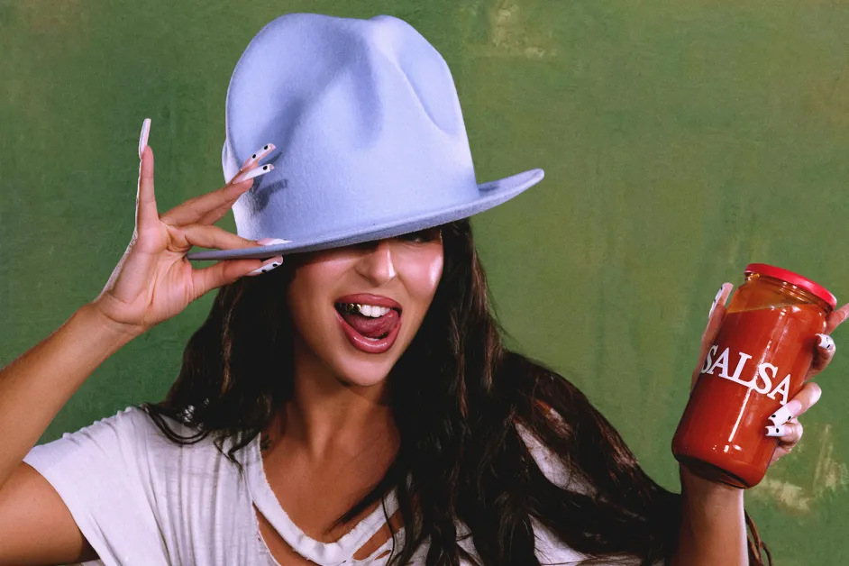
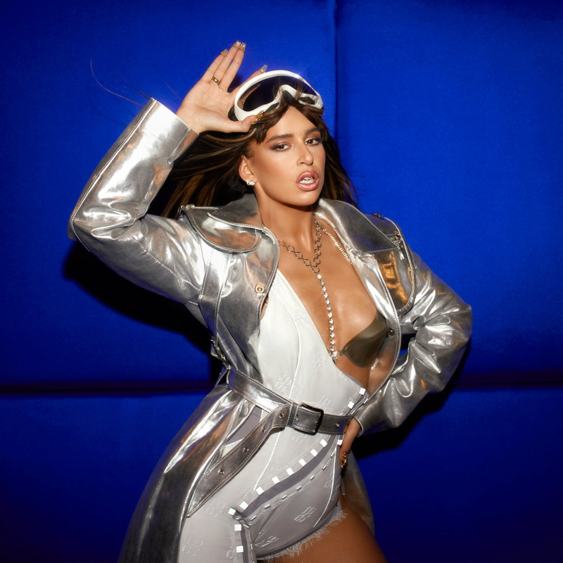

Since the release of her debut album Calambre in 2020, Nathy Peluso, an Argentine singer, rapper, and songwriter based in Spain, has shaken up the Latin music scene with her genre-bending style and captivating stage presence. At 29, she has won five Latin GRAMMYs, tying with Mercedes Sosa as the most awarded Argentine female artist in the history of the awards. She also made history as the first woman to win the award for Best Rap/Hip-Hop Song. Furthermore, she adds two more nominations for Latin GRAMMYs 2025 for her collaborations "DE MARAVISHA" with Tokischa and "XQ ERES ASÍ" with Álvaro Díaz.
Known for her commanding live performances and artistic originality, she has taken the stage at iconic venues and festivals such as Coachella, Movistar Arena, Sónar, and Mad Cool. Her collaboration with Bizarrap (BZRP Music Sessions #36) became a viral sensation, garnering millions of streams worldwide.
In 2024, she released her sophomore album, GRASA — an intimate and ambitious work that blends rap, salsa, ballads, and tropical sounds, inspired by mafia cinema and 1970s New York salsa. The album features collaborations with artists such as Blood Orange, Duki, C. Tangana, Ca7riel, and Paco Amoroso. It earned three Latin GRAMMYs and was nominated for the 2025 GRAMMYs for Best Latin Rock or Alternative Album. That same year, she released CLUB GRASA, an EP offering electronic reinterpretations of her sonic universe, and made her debut on The Tonight Show Starring Jimmy Fallon with an acclaimed performance alongside Blood Orange.
Between 2024 and 2025, Nathy launched her first world tour, GRASA Tour, selling out venues in cities like New York, Los Angeles, London, and Paris — cementing her status as one of the most influential voices in today's global music scene.
In February 2025, she released the single EROTIKA, an homage to the explosive 1990s New York erotic salsa scene. Through this track Nathy marks the prelude to a new era that kicked off with "Malportada," her explosive collaboration with Rawayana that fuses tropical cadence with sonic rebellion. This single is the beginning of an EP dedicated to salsa, with the same name. "Malportada" EP features six tracks, composed in Puerto Rico to reaffirm her visceral connection with salsa. With a raw, tropical energy, the Argentine artist reinvents the genre in her own way, between the provocation of her lyrics and sonic virtuosity. A new Caribbean pulse with which Nathy Peluso dazzles once again.
En febrero de 2026, Nathy Peluso marca un nuevo hito en su carrera con el lanzamiento de "Como en el Idilio", una salsa clásica junto a Marc Anthony. Esta colaboración histórica no solo confirma su lugar dentro del linaje salsero, sino que también subraya su capacidad para dialogar de igual a igual con los grandes referentes del género, tendiendo un puente entre tradición y vanguardia.
